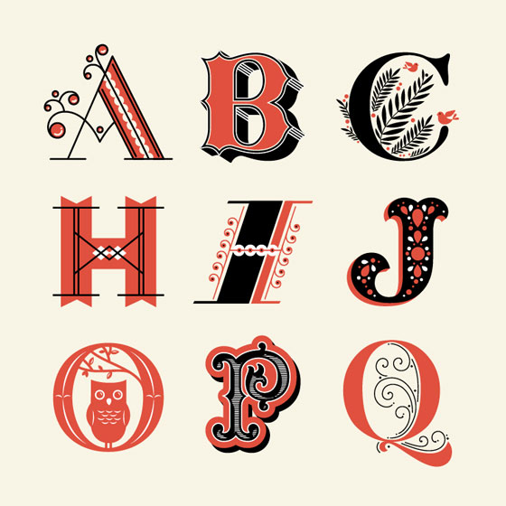

Jessica Hische
First-Class Freelance
Ever wondered what going freelance was like? Ask Jessica Hische. An American letterer, typographical artist and once described as an ‘avid internetter’ who needs no introduction, mastered the art of going freelance.
The Start of Her Career
Jessica always was the doodler and her love for design began in High School, as she doodled graffiti versions of class mates names. Jessica says she always loved to draw, especially drawings of a more technical nature and projects with a solid starting point. She was always drawn to the fact that graphic design was about problem solving where the focus was not so much on being ‘self-expressive’, as a lot of art would tend to come across that way. After graduating in 2006 from Tyler School of Art with a BFA in Graphic and Interactive Design, Jessica worked for Headcase Design in Philadelphia for a while before taking a position at Louise Fili Ltd. as Senior Designer. Being based in Fili is where she learnt most of her lettering skills, spending up to 16 hours every day working between Fili and her freelance clients. Jessica decided to leave in 2009 after two and a half years to focus on and further her freelance career, meaning she was able to embark on personal projects which to her came across as a lot more exciting to create.
Jessica's Projects
One of Jessica’s first freelance projects she started was called ‘Daily Drop Cap’, a project where she created a new illustrative letter every day, working through the whole alphabet for a total of 12 times over. The site at its peak had over 100,000 visitors each month and due to the success of this project a thirteenth alphabet was produced where guest contributors crafted a letter each. Hische has become as well known for her side projects as her client projects, although she does not consider herself as a web designer, she has created many educational web based projects such as ‘Mum This is How Twitter Works’, ‘Should I work For Free’ etc. Jessica is always known for using the word ‘procrastiworking’, describing how she often procrastinates on client work by finding herself working on personal projects – a trait of a freelance queen, always enjoying the side projects.
Jessica loves a challenge. Working on projects outside her comfort zone, such as a recent project producing water colour paintings for a hospital. Ever since coming back to work after having a baby, she has had the mindset of going a little further, trying new projects.
As she once said,“Whenever something that used to bring you joy no longer brings you joy, it’s time to try something new. It’s not that that thing will never give you joy again, it’s just that you need some time away”
So even as a new mum and moving house a few months later, she still continues to pursue freelance in the best way.
Devotion to a particular client is a must for Jessica. Only taking on one logo project at a time means she can devote as much time and effort to the project, making sure she produces the best and only the best.
Some of Jessica’s clients include...
- Penguin Books – Tomorrow I’ll Be Brave
- Tiffany & Co.
- Starbucks
- United States Postal Service
- Target
- American Express
- Victoria Secret
- Nike
- Samsung
- Moonrise Kingdom Movie Lettering (Wes Anderson)
- Family Tree Movie (Christopher Guest)
alongside producing commercial typefaces available to purchase in her store.
Tomorrow I’ll Be Brave
As it came to bedtime for her little one, Jessica was always found reading her a bedtime story. Each time she read a new book, each night she saw a lack of themes regarding reflection on your day and setting intentions for the next, this inspired Jessica to write “Tomorrow I’ll Be Brave”(published by Penguin). Jessica wanted to add an uplifting and empowering book to the shelves. The focus being that the kids would be the best they can be and introduce self-forgiveness. I found this really inspiring, that with personal experience and with the power of design you can create something that will change the world’s mindset – this is a perfect example of how design is so important, so powerful and so moving.
Starbucks
This project enabled Jessica to produce her work into physical things. In this instance her lettering was shown in a coffee cup shaped piece of chocolate. Jessica really shows how a designer’s work is unique every single day, from writing a book to designing type for Starbucks. Her commitment really is an example of how much she loves design. She is found working on Saturdays because she is so passionate about the project and heading to bed at 10pm incase she gets a 5am wake up call – the cons that come with freelance, yet Jessica masters it.
Time Management for the Freelancer
For Jessica from juggling admin work when being self-employed, designing for top companies to looking after a crying, hungry baby can become tricky to balance it all out evenly. Yet judging on her beautiful outcomes of her work she seems to master it pretty well. She advises having a particular day for admin work, avoiding having client deadlines on that day. Perhaps doing that work which isn’t paid but still needs to be done in order to progress to build up your profile and increase the number of clients. This structure means your weak is not killed by little things creeping up like interviews or the odd email.
There’s a small line between fitting all your work in and being completely burnt out and it’s important not to fall into the latter part. Jessica gives the advice of scheduling her deliverables in a staggered way, which helps to break it up. It’s important to take a step back and breathe sometimes, instead of being constantly bombarded with work 24/7. You can say NO to projects, a quote from Jessica herself,
“The only thing that you can do is promise yourself you’ll be better in the future. I think that that’s the thing you always have to think about when you’re in the middle of a bad, ‘I’m not good at stuff’ phase”. The present is because of what decisions you’ve made in the past, not the ones you’re currently making.Jessica Hiche
Tips For Pricing Your Work
Jessica is a pro when it comes to pricing work. It all depends on the resources, time limit, your ability to judge your skill and the overall complications of the project that will depend on how long it will take you.
Jessica describes hourly pricing as a danger zone, you can end up in a tough situation if you don’t have a firm grasp on how long it takes you to design each project, especially when clients ask for a full-price upfront. Although even when you grasp your ability and when working for big named clients hourly pay can become completely unfair. You could be 10 times more efficient compared to another designer and produce the same talent of work, yet you get paid less than them – that’s hardly fair?
Although charging hourly seems like the dark hole of pricing your work, even with its disadvantages it is a good place to start. Some designers use it to give them a rough outline of what their first quote should be, not as the one and only defining factor.
Rights and licencing can play a big role when designing for clients. Some clients desire more rights than others, although it is important to remember anything you create, you own the rights. Logo pricing is different as you need to take in account the rights the client will need to trademark it and use it on whatever they desire, you have the power to hand over these rights as a costly fee and with whatever limitations you desire, you’re the designer.
There is always the fear of knowing if you priced your work right, Jessica gives some great tips on this matter. If the client replies straight away, absolutely ecstatic, unfortunately that’s not exactly good news. You’ve fallen into the trap of pricing too low, but with experience you will avoid this problem and hopefully get a response of a client wanting to negotiate – that’s usually the green light you’re looking for.
Jessica's Top Tools
| Tool | What can it do? |
|---|---|
| iPhone | Answering emails, speech texting etc. She prefers this for a quicker approach. |
| iMac | Answer to all design problems |
| Adobe Creative Cloud | Jessica’s recommendation are Illustrator and Photoshop |
| Robofont | Perfect for type design projects |
| Wacom | Perfect for editing sketches and photos in Photoshop |
Conclusion
In conclusion, we can see that Jessica is a pro at multitasking throughout the freelance life. Designing beautiful work, judging her time management and pricing correctly whilst being a first time Mum. Jessica Hische is definitely an inspiring design icon, where many lessons can be learnt from her experienced opinion. I personally chose Jessica as I find her work inspiring and even though she has a consistent style, all her work is different in many ways. From writing books, to designing cookies for Starbucks, Jessica seems like she is living the high life. If Jessica’s experience with freelance doesn’t persuade you, I’m not sure what will.